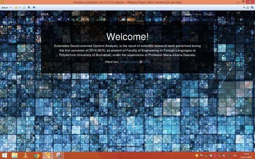
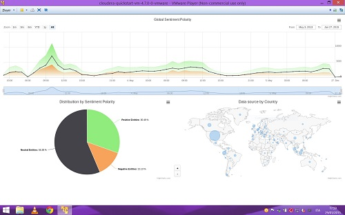

Hi, visitor,
my name is Sergio, but you can call me mellowonpsx.
Here you can find some information about me, about my – in large part scholastic – career
and about my (for now school only) projects. I started programming in high school, about 10-12 years ago, but I started using GitHub only from 2014, so the number of project you can find is very limited.
I hope you will find this information interesting, and if you want you can contact me!
October 2014 – February 2015
Software Engineering at Universitatea Politehnica din Bucuresti (UPB)
November 2013 – [September 2015/March 2016]
Computer Science Engineering at Università degli Studi di Brescia (UniBS)
September 2005 – 30 October 2013
Information Technology Engineering, curriculum Computer Science at Università degli Studi di Brescia (UniBS)
During my entire scholastic career I've worked. None of that works were related to computer science field, except for the internship that leads to my Thesis. If you are interest in my complete working experience, please contact me.
July 2013 – September 2013
If you are more intrested in how I code, these are the repo you're looking for.
Extensible Social-oriented Content Analysis, is the result of scientific research work performed during the first semester of 2014-2015, as student of Faculty of Engineering In Foreign Languages at Polytechnic University of Bucharest.
Web based UI, sets up cron scripts to manage flume agents and perform (word level) Sentiment Analysis with Hive queries, export report in MySQL database and Data Visualization with HighCharts.
 
If you are interested in code, follow the link.
One of the lecture I've followed during my semester in Bucharest (Special Topic in Software Engineering) was based on Cloudera "Apache Hadoop – A course for undergraduates" course.
We had weekly homework: writing Map/Reduce functions, custom partitioner, pig/hive queries, and other several works.
If you are interested in code, follow the link.
Yet Another Street View Video Maker is the final project for Digital Image Processing class.
The web-based user interface allows users to select two points on a map and calculates the route with Google’s APIs.
Information on images are collected and sent to a server, which download the photos and compose the video.
User interface allows to control work progress and to download the final video.


There is a presentation video and some example in this Google Drive folder.
If you are interested in code, follow the link.

Bifora-DOCs, is the final project for Web Development class. It's a single-page application, for document managing.
Php/MySQL back-end offers simple APIs to html/css/JavaScript front-end. No backend/front-end frameworks are used due to requirements.
If you are interested in code, follow the link.
Not Only STS is the final project for Network Security class.
For this project I decide to implement STS using QCA crypto libs and QT to manage TCP/IP stack.
I also used OpenSSL libs to generate big random secure primes. After finish the first, command line version, I've implemented a GUI, using QT libs.
If you are interested in code, follow the link.
Surface Volumetric Data Rendering and Visualization is a Computer Graphic course. Those repos contain several homework, small project to practice and understand better the theory behind computer graphics. A first, general, assignment to test class's coding ability [1]. A simple planetarium with OpenGL/FreeGlut lib [2]. A small 3d world with a FPS like camera system [3]. Experiments with panda 3d and BulletPhisics library [4]. A 3d model, armature and animation with Blender [5]. A very easy video games [6].
Choose your favorite way to contact me.
I don’t like spam, as everyone on earth. To obtain my email address, take my nickname (the part before ".github.io"), and add @ "gmail.com".
My personal phone number is +39 338 42 83 433, availability may change.